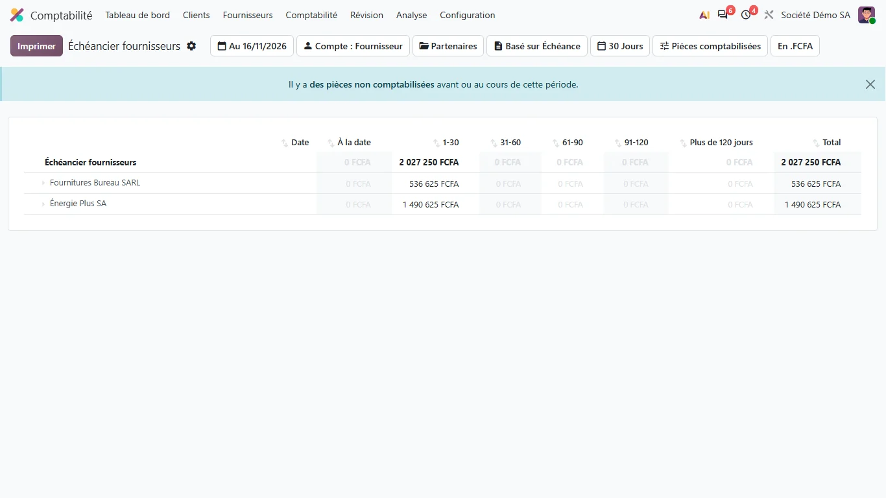

Extraire et revoir la balance âgée des fournisseurs
Objectif. Suivre les dettes fournisseurs et préparer les paiements.
Menu Odoo 15Comptabilité > Rapports > Balance âgée fournisseurs (« Échéancier fournisseurs »)
Étapes
- Ouvrez le rapport à la date voulue.
- Repérez les factures échues et à échoir.
- Préparez la liste des paiements de la semaine.
- Signalez les soldes débiteurs (avances) à justifier.

À vérifier
- Le total égale le solde des comptes fournisseurs de la balance générale.
À éviter
- Ne payez pas une facture absente de la balance âgée sans la faire enregistrer.
Exercice
Éditez la balance âgée et préparez les paiements du mois.